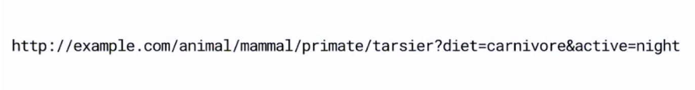
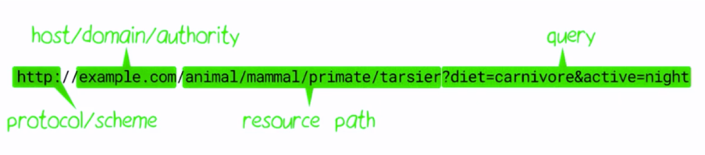

# Surfing on Android
> Bytedance Android Engineer
hejinhai@bytedance.com
## Points
+ Web Basics
+ Internet
+ HTTP / RESTful API
+ Data-interchange formats
+ Android Practice
+ Fetch Data
+ Parse JSON
URL
Uniform Resource Locator


## Request/Response
Client request
```
GET / HTTP/1.1
Host: www.example.com
```
Server response
```
HTTP/1.1 200 OK
Date: Mon, 23 May 2005 22:38:34 GMT
Content-Type: text/json; charset=UTF-8
Content-Length: 138
Last-Modified: Wed, 08 Jan 2003 23:11:55 GMT
Server: Apache/1.3.3.7 (Unix) (Red-Hat/Linux)
ETag: "3f80f-1b6-3e1cb03b"
{"message": "hello"}
```
## REST Methods example
| Method | http://x.c/video/ | http://x.c/video/123 |
| ---------------------------- | ------------- | ----- |
| GET | get all videos | get video 123 |
| POST | post video | - |
| PUT | - | update video 123|
| DELETE | delete all videos | delete video 123 |
## REST Documents
+ [REST Wiki](https://en.wikipedia.org/wiki/Representational_state_transfer)
+ [REST API Tutorial](https://restfulapi.net/)
+ [理解RESTful架构](http://www.ruanyifeng.com/blog/2011/09/restful.html)
+ [PostMan](https://www.getpostman.com/)
+ [The Cat API](https://docs.thecatapi.com/)
+ [Github API](https://developer.github.com/v3/)
## Data-interchange formats
Try to represent user info:
+ name: Alice
+ age: 20
+ languages: zh/en
JSON vs XML
```json
// JSON - JavaScript Object Notation
{
"name": "Alice",
"age": 20,
"languages": ["zh", "en"]
}
```
```XML
<xml><!-- XML - Extensible Markup Language-->
<name>Alice</name>
<age>20</age>
<languages>
<language>zh</language>
<language>en</language>
</languages>
</xml>
```
JSON data types
```json
{
"string_name": "Alice",
"number_age": 20,
"boolean_vip": true,
"array_languages": ["zh", "en"],
"object_school": {
"name": "Zhejiang University",
"city": "Hangzhou"
},
"null_email": null
}
```
JSON quick text
+ name: Alice
+ age: 20
+ languages: zh/en
## Markdown support
Write content using inline or external Markdown.
Instructions and more info available in the [readme](https://github.com/hakimel/reveal.js#markdown).